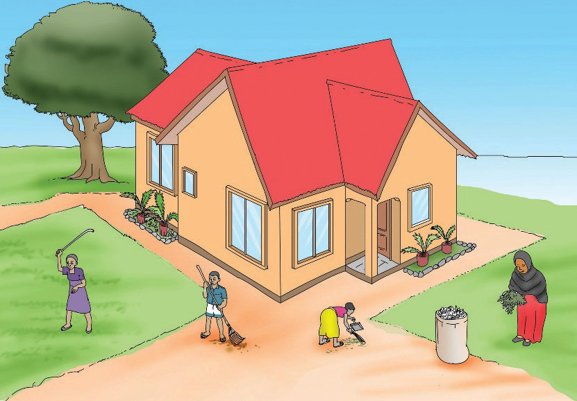

4. Mazingira kuyatunza, faida tumezijua,
Taka wengi kutotunza, sasa acha nakwambia,
Mana hili si la kwanza, sote tuiweke nia,
Sipotunza mazingira, nayo hayatatutunza.
Habari

Watu wote katika familia hupaswa kutunza mazingira. Tukitunza mazingira yetu tutapata faida nyingi. Tutapata hewa safi, tutaepuka maradhi na tutakuwa na afya bora. Miti hutupatia mbao, matunda, kivuli na mvua. Vilevile, miti huzuia mmomonyoko wa udongo. Tuache tabia ya kutupa takataka ovyo kwa kuwa zinachafua mazingira.